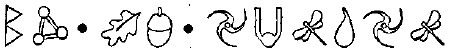
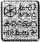

LENİN PROSPEKT, MURMANSK
MİKHAEL Vassikin sabırsızlanıyordu. Son iki yıldır, Britva’nın ricası üzerine bebek bakıcılığı yapıyordu. Aslında tam olarak bir rica sayılmazdı. Rica sözcüğü konuyla ilgili bir seçme şansınız olduğunu gösterir. Oysa Britva ile tartışamazdınız. Ona sessizce karşı bile koyamazdınız. Yeni müdür Menidzer ağzından çıkan söz emir sayılan, eski kafalı biriydi.
Britva’nın talimatı oldukça basitti: onu besle, yıka ve bir yıl içinde komadan çıkmazsa, öldür ve cesedini Kola körfezine at.
Zamanın dolmasına iki hafta kala, İrlandalı yattığı yerden dimdik ayaklanıvermişti. Bir ismi sayıklayarak uyanmıştı. Bu isim, Angeline idi. Kamar öylesine şaşırmıştı ki açmakta olduğu şarap şişesini yere düşürmüştü. Şişe parçalanarak, Ferruci ayakkabısını delmiş ve başparmağının tırnağını çatlatmıştı. Tırnaklar yeniden uzardı ama Kuzey Kutbu Dairesinde Ferruci ayakkabılar bulmak zordu. Mikhael’in rehineyi öldürmesine engel olmak için ortağı onu güzelce azarlamak zorunda kalmıştı.
Bu yüzden şimdi, bekleme oyununu oynuyorlardı. Adam kaçırmak planlı programlı bir işti ve kuralları vardı. Önce bir uyarı notu gönderirdiniz ya da bu kez olduğu gibi bir e-posta. Güvercinin bir yerlerden para bulabilmesi için birkaç gün bekler, sonra da onu fidye talebiyle birlikte vururdunuz.
Mikhael’in Lenin Prospekt’teki dairesine tıkılmış, Britva’nın telefonunu bekliyorlardı. Hava almak için bile dışarı çıkmaya cesaret edemiyorlardı. Zaten dışarıda da görülecek pek bir şey yoktu. Murmansk, Rusya’nın şu doğrudan beton kalıbından çıkmış kentlerinden biriydi. Lenin Prospekt yalnızca karlarla kaplı olduğunda göze hoş görünürdü.
Kamar yatak odasından çıktı. Keskin hatları, şaşkınlıktan gerilmişti. “Havyar istiyor, inanabiliyor musun? Ona bir çanak dolusu et yemeği verdim, oysa havyar istiyor, nankör İrlanskii.”
Mikhael gözlerini devirdi. “Onu uyurken daha çok seviyorum.”
Kamar başını sallayıp şöminenin içine tükürdü. “Çarşafların çok sert olduğunu söylüyor. Onu bir çuvala sarmalayıp körfeze yuvarlamadığım için şanslı sayılır —”
Çalan telefon boş yere salladığı tehditlerini böldü.
“İşte bu, dostum,” dedi Vassikin, Kamar’ın omzuna vurarak. “İşler yolunda.”
Vassikin ahizeyi kaldırdı. “Evet?”
“Benim,” dedi eski telefon hatları yüzünden teneke gibi çıkan bir ses.
“Bay Brit –”
“Kapa çeneni, salak! Adımı asla söyleme!”
Mikhael yutkundu. Menidzher, adının yaptığı diğer farklı işlerle anılmasından hoşlanmazdı. Bunun anlamı, kırtasiye işi olmayacak ve kaydedilme olasılığı varsa adı söylenmeyecekti. Yeri belirlenemesin diye, şehirde araba kullanırken telefon açmak gibi bir alışkanlığı vardı. “Üzgünüm, patron.”
“Olman gerekir zaten,” diye sürdürdü konuşmasını Mafya’nın kilit adamı. “Şimdi dinle beni ve konuşma. Söyleyecek hiçbir şeyin yok.”
Vassikin ahizeyi eliyle kapadı. “Her şey yolunda,” diye fısıldadı, Kamar’a onay işareti vererek. “Harika bir iş çıkarıyoruz.”
“Fowller çok zeki bir takım,” diye devam etti Britva. “Ve son gönderdiğimiz e-postanın izini sürmeye yoğunlaştıklarından eminim.”
“Ama ben onun girişini —”
“Ne dedim ben sana?”
“Konuşmamı söylediniz, Bay Brit... efendim.” “Doğru. Bu yüzden fidye mesajını gönder ve Fowl’u düşüş noktasına götür.”
Mikhael’in beti benzi attı. “Düşüş noktasına mı?” “Evet, düşüş noktasına. Seni orada aramak, hiç kimsenin aklına gelmez, emin olabilirsin.”
“Ama —”
“Bak yine konuşuyorsun! Birazcık dirençli ol. Yalnızca birkaç gün için. Alt tarafı hayatından bir yıl gidecek. Bu seni öldürmez.”
Vassikin’in beyni bir mazeret aramak için hızla çalıştı. Ama aklına hiçbir şey gelmedi.
“Pekala, patron. Nasıl istersen.”
“Güzel. Şimdi beni dinle. Bu senin için büyük bir şans. Görevini başarıyla tamamlarsan, örgütte birkaç basamak birden yükselirsin.”
Vassikin sırıttı. Şampanya ve pahalı arabalarla dolu bir yaşam ona el salıyordu.
“Bu adam gerçekten de genç Fowl’un babasıysa, oğlan parayı ödeyecektir. Parayı alır almaz, her ikisini de Kola’dan aşağı at. Birilerinin sağ kalıp bir kan davası başlatmasını istemiyorum. Bir sorun varsa, beni ara.” “Pekala, patron.”
“Bir şey daha var.”
“Evet?”
“Beni arama.”
Telefon kapandı. Vassikin elindeki ahizeye bir avuç veba virüsüymüş gibi bakakaldı.
“Ne dedi?” diye sordu Kamar.
“İkinci mesajı göndermemiz gerekiyor.”
Kamar’ın yüzünü koca bir gülümseme kapladı. “Harika. Artık işin sonuna varmak üzereyiz.”
“Sonra da paketi, düşüş bölgesine taşımalıymışız.”
Kamar’ın gülümsemesi bir anda kayboluverdi. “Ne? Şimdi mi?”
“Evet. Şimdi,”
Kamar küçük oturma odasını adımladı. “Bu delilik. Hiçbir anlamı yok. Fowl, birkaç günden önce buraya varamaz. İki gün boyunca, bu zehri boş yere solumamıza gerek yok. Ne biçim bir mantık bu?”
Mikhael telefonu uzattı. “İstersen, bunu ona sen söyle. Menidzher’in deli diye çağırılmaktan çok hoşlanacağından eminim.”
Kamar döşemeleri eskimiş kanepenin üzerine oturup başını ellerinin arasına aldı. “Bu iş hiç bitmeyecek mi, acaba?” Ortağı on altı megabaytlık, eski model bilgisayarlarını açtı. “Tam olarak bilmiyorum,” dedi önceden hazırlanmış mesajı gönderirken. “Ama Britva’nın dediklerini yapmazsak, neler olacağını biliyorum.”
Kamar iç geçirdi. “Sanırım, gidip mahkûma bir süre bağırmam gerekecek.”
“Bir işe yarayacak mı?”
“Yaramayacak,” diye itiraf etti Kamar. “Ama kendimi daha iyi hissetmemi sağlayacak.”
E93, KUZEY KUTBU MEKİK İSTASYONU
Kuzey Kutbu İstasyonu asla perilerin turist listesinin başında yer almamıştı. Buzdağları ve kutup ayıları sevimli olabilirdi ama hiçbir şey ciğerlerinizi bu radyasyonlu havayla doldurmaya değmezdi.
Holly mekiği çalışır durumdaki tek iskeleye yanaştırdı. Terminal ıssız bir ambarı andırıyordu. Parazit yayın yapan taşıyıcı kemerler yerlere saçılmıştı ve düşük-düzeyli ısıtma boruları böcek kaynıyordu.
Holly eski bir dolaptan, insanlara ait paltolarla eldivenler çıkarttı.
“Bunları giyin, Çamur Oğlanlar. Burası soğuktur.” Bunu Artemis’e söylemeye gerek yoktu. Terminalin, güneş enerjisiyle çalışan aküleri, uzun süredir kapalı olduğundan dolayı buz duvarları tıpkı kıracağın içindeki bir ceviz gibi çatlatmıştı.
Holly uzaktan Kâhya’ya paltosunu fırlattı. “Biliyor musun, Kâhya? Çok pis kokuyorsun!” dedi gülerek.
Hizmetkâr homurdandı. “Sen ve senin şu radyasyon kremin. Sanırım cildim renk değiştirdi.”
“Bu konuda endişelenme. Elli yıla kalmaz, düzelir.” Kâhya, Kazaklar’a özgü kaim paltoyu boynuna kadar ilikledi. “Neden böyle sarınıp sarmalandığını anlamıyorum. Üzerinde koruma giysin var.”
“Paltolar kamuflaj için” diye açıkladı Holly, yüzüne ve boynuna radyasyon kremi sürerken. Kalkanımızı indirdiğimizde titreşim giysileri bir işe yaramıyor. Ayrıca kemiklerimiz de bir reaktör merkezine dönüşebilir. Bu yüzden, yalnızca bu gece için hepimiz birer insanız.” Artemis kaşlarını çattı. Periler görünmez olamazlarsa, babasını kurtarmak daha da zorlaşacaktı. Geliştirdiği planını uyarlaması gerekiyordu.
“Bu kadar konuşmak yeter,” diye homurdandı Root, sivri kulaklarından aşağı ayı postundan bir şapka geçirerek. “Beş dakika içinde dışarı çıkıyoruz. Herkesin silahlı ve tehlikeli olmasını istiyorum. Senin de Fowl. Tabii ki eğer küçük bileklerin silah kaldırabilecek güçteyse.” Artemis mekiğin cephaneliğinden bir peri tabancası seçti. Pilini yuvasına oturtup ayarım üçe yükseltti.
“Benim için endişelenmeyin, Yarbay. Alıştırma yaptım. Malikânede sakladığımız, çok sayıda LEP silahı var.” Root’un yüzü biraz daha gerildi. “Şey, hareketsiz bir karton hedefle gerçek bir insan arasında çok fark vardır.” Artemis’in dudaklarında, o vampirlere özgü gülümsemesi belirdi. “Her şey plana uygun olarak gelişirse, silaha gerek kalmaz. İlk aşama çok basit: Vassikin’in dairesinin yakınlarında bir gözlem noktası oluşturacağız. Kâhya bir fırsat yakalayınca, Rus dostumuzu ele geçirecek ve beşimiz birlikte biraz sohbet edeceğiz. Hipnotizmanızın etkisi altındayken, bize gerekli olan her şeyi söyleyeceğinden eminim. Daha sonra, korumaları etkisiz duruma getirip babamı kurtarmak çocuk oyuncağı.”
Root ağzını kaim bir atkıyla örttü. “Peki, ya işler plana uygun olarak gelişmezse?”
Artemis’in gözlerinde soğuk ve kararlı bir bakış vardı. “İşte o zaman, Yarbay, doğaçlama yapmak zorunda kalacağız.”
Holly midesinde bir ürperti hissetti. Ve bunun havanın soğuğuyla bir ilgisi yoktu.
Terminal buzdan bir tepenin, yirmi metre altına gömülüydü. Yerüstüne çıkmak için özel bir asansöre bindiler ve Kuzey Kutbu bölgesindeki bu gecede, tüm dünyanın gözüne bir erişkin ve üç çocuktan farksız göründüler. Her üç çocuğun da giysilerinin altında tıngırdayan zalim silahlar olsa bile.
Holly bileğindeki GPS yer belirleyicisine göz attı. “Rosta bölgesindeyiz, Yarbay. Murmansk’ın yirmi kilometre kuzeyinde.”
“Foaly hava hakkında ne diyor? Varış noktamıza kilometrelerce uzaktayken kendimi bir kar fırtınasının ortasında bulmak istemiyorum.”
“Hiç ümit yok. Hat alamıyorum. Magma alevleri hâlâ alçalmamış olmalı.”
“D’Arvit!” diye küfretti Root. “Pekala, sanırım yola yaya olarak devam etmemiz gerekiyor. Kâhya, buraların uzmanı sensin, yönü sen belirle. Yüzbaşı Short, sen arkayı denetle. Geride kalan insanların popolarını, gönül rahatlığıyla tekmeleyebilirsin.”
Holly Artemis’e göz kırptı. “Bunu hatırlatmanıza gerek yok, efendim.”
“Olmadığına eminim,” diye homurdandı Root, dudaklarında hafifçe oynaşan gülümsemeye benzer bir ifadeyle.
Bu rengârenk grup demiryoluna varıncaya kadar, ay ışığının altında güçlükle yürüdü. Kar birikintilerinden ve çukurlardan korunmak için yataklı vagonlara paralel yürümek zorundaydılar. Yavaş ilerliyorlardı. Kuzeyden esen rüzgâr, giysilerindeki her gözenekten içeri sızıyor ve soğuk hava bedenlerinin açıkta kalan her noktasına, bir milyon elektrikli iğne gibi saldırıyordu.
Aralarında pek bir konuşma geçmiyordu. Üçünün üzerlerinde sarmal-ısıtıcılı giysiler olsa da Kuzey Kutbunun insanlar üzerinde bu tür bir etkisi vardı.
Holly sessizliği bozdu. Bir süredir aklına bir şeyler takılmıştı. “Söylesene, Fowl,” dedi Artemis’in arkasından seslenerek. “Baban da senin gibi mi?
Artemis’in adımları bir an için yavaşladı. “Garip bir soru. Bunun neden soruyorsun?”
“Şey, sen Peri Halkı’nın dostu sayılmazsın. Ya, kurtarmaya çalıştığımız adam bizi ortadan kaldırmayı amaçlıyorsa?”
Uzun sessizliği bozan tek ses takırdayan dişlerden geliyordu. Holly, Artemis’in ağzının bir karış açıldığını fark etti.
“Telaşlanmak için bir neden yok, Yüzbaşı. Yasadışı denilebilecek birkaç girişim dışında, babam... o... asil biridir. Başka bir yaratığa zarar verme düşüncesi, ona itici gelir.” Holly çizmesini yirmi santimetrelik karın içinden hızla çekti. “Pek, sen neden böylesin?”
Artemis’in soluğu, buz tutmuş tabakalar halinde omuzlarına döküldü. “Ben... ben bir hata yaptım.”
Holly gözlerini kısarak, insanın ensesine baktı. Bu sözler gerçekten de Artemis Fowl’un içinden mi geliyordu? İnanılması güçtü. Daha da şaşırtıcı olan şey, Holly’nin nasıl bir tepki vermesi gerektiğini bilmemesiydi. Bağışlayıcı elini mi uzatmalıydı, yoksa cezalandırıcı tekmesini mi atmalıydı? Sonuçta, hüküm vermeyi daha sonraya ertelemeye karar verdi, bir süre için.
Esen rüzgârın yumuşatmış olduğu, derin bir dere çukurundan geçtiler. Kâhya bundan hoşlanmamıştı. Askeri hisleri kafatasının içinde trampet çalıyordu. Yumruğunu sıkıp havaya kaldırdı.
Root ona yetişmek için adımlarım hızlandırdı.
“Bir sorun mu var?”
Kâhya gözlerini kısarak, karlarla örtülü araziye bakıp çevrede ayak izleri aradı. “Olabilir. Burası beklenmedik bir saldırı için uygun bir yer.”
“Olabilir. Geleceğimizi bilen birileri olsaydı eğer.”
“Bu olası mı? Bunu bilen biri olabilir mi?”
Root burnundan hava çıkardı, soluğu önünde koca bulutlar oluşturdu. “İmkânsız. Çavlan tamamen yalıtımlı ve LEP güvenliği gezegenin en sıkı emniyet sistemidir.”
İşte tam o sırada goblin vurucu timi dağın arkasından süzüldü.
Kâhya, Artemis’i yakasından kavrayıp onu sertçe bir kar birikintisinin içine fırlattı. Öbür eliyle silahım çekmişti bile.
“Başını kaldırma, Artemis. Maaşımı hak etmemin zamanı geldi.”
Başı bir metre kalınlığındaki karın içine gömülü olmasa, Artemis ona öfkeli bir yanıt verirdi.
Havada dağınık düzende uçan dört goblin vardı. Yıldızlarla aydınlanmış gökyüzünde bir karartı gibiydiler. Gizlenmeye bile çalışmadan, hızla üç yüz metreye yükseldiler. Ne saldırdılar, ne de kaçtılar, öylece hareket etmeden havada kaldılar.
“Goblinler,” diye homurdandı Root, Uzakatış neutrino tüfeğini omzuna alarak. “Ne kadar da aptallar. Tek yapmaları gereken, bizi birer birer vurup öldürmekti.” Kâhya kendine uygun bir yer bulup dengede kalmak için bacaklarını açtı. “Gözlerinin akını görene kadar bekleyecek miyiz, Yarbay?”
“Goblinlerin gözlerinin akı yoktur,” diye yanıt verdi Root. “Ama yine de tabancanı kılıfına koy. Yüzbaşı Short ile ben onları etkisiz hale getireceğiz. Kimsenin ölmesine gerek yok.” Kâhya Sig Sauer’ını yavaşça kolunun altındaki cebe koydu. Zaten bu mesafeden hemen hemen etkisiz sayılırdı. Holly ile Root’un ateş hattında neler yapabileceklerini izlemek ilginç olabilirdi. Ne de olsa, Artemis’in yaşamı ellerinde sayılırdı. Tabii ki kendisininki de.
Kâhya iki yana bir göz attı. Holly ve yarbay çeşitli silahların tetiğine basıyor ama sonuç alamıyorlardı. Silahlar yılan yuvasına düşmüş fareler kadar ölüydü.
“Anlamıyorum,” diye mırıldandı Root. “Bunları kendim denetlemiştim.”
Doğal olarak olayı ilk çözen Artemis oldu. Saçlarındaki karı silkeledi.
“Sabotaj,” diye belirtti Artemis, işe yaramaz peri tabancasını yana fırlatarak. “Başka bir şey olamaz. İşte bu yüzden, B’wa Keli Yumuşakburunlara gereksinim duyuyor, bir şekilde peri lazerlerini etkisiz kılmışlar.”
Ama ne yarbay, ne de Kâhya onun söylediklerini dinlemiyordu. Şu an, akıllıca sonuçlar çıkarma değil, eyleme geçme zamanıydı. Kuzey Kutbunun soluk parıltısına karşı bir karartı gibi öylece dışarıda oturuyorlardı. Çok sayıda Yumuşakburun lazer patlaması yanı başlarındaki karın içinde delikler açmaya başlayınca, Artemis’in kuramı da onaylanmış oldu.
Holly miğferinin görsel işlevini çalıştırıp düşmanı zumladı.
“İçlerinden birinin Yumuşakburun lazeri varmış gibi görünüyor, efendim. Uzun namlulu bir şey.”
“Gizlenmemiz gerekiyor. Çabuk!”
Kâhya başını salladı. “Bakın. Bir çıkıntı. Dağ sırtının altında.”
Hizmetkâr, Artemis’i bir çocuğun bir kedi yavrusunu taşıyacağı rahatlıkla yakasından yakaladı. Karların içinde güçlükle ilerleyip çıkıntının içindeki sığmağa girdiler. Belki bundan bir milyon yıl önce, buzlar ancak bir tabakayı azıcık çökertecek kadar erimiş, sonra da yeniden donmuştu. Sonuçta ortaya çıkan ve çağlar boyunca bozulmadan korunan bu delik, şu an hayatlarını kurtarabilirdi.
Sırtlarını buzdan duvara sıkıca yaslayıp deliğin altına daldılar. Buzdan yapılmış bu gök kubbe her türlü konvansiyonel silaha dayanıklıydı.
Kâhya yukarıdan görülme tehlikesine göze alıp bedenini bir kalkan gibi kullanarak Artemis’i korudu.
“Çok uzaktalar. Onları seçemiyorum. Ya sen, Holly?”
Yüzbaşı Short başını donmuş çıkıntının altından çıkarıp görsel okuyucusunu odakladı.
“Ya, bunlar ne haltlar karıştırıyorlar?”
Holly görüntüler netleşinceye kadar bir süre bekledi. “Çok ilginç,” dedi. “Şu an hepsi ateş açtı ama...” “Ama ne, Yüzbaşı?”
Holly merceklerin çalıştığından emin olmak için miğferine yavaşça vurdu. “Görsel okuyucularımda bir sorun olabilir, efendim ama sanki özellikle isabet ettirmiyorlar ya da başımızın çok üzerinden ateş ediyor gibiler.”
Kâhya kanının beynine hücum ettiğini hissetti. “Bu bir tuzak!” diye kükredi, arkaya doğru uzanıp Artemis’i yakalayarak. “Herkes dışarı! Herkes dışarı!”
Ve işte tam o anda goblin güçleri aşağı elli ton taş, buz ve kar yuvarladılar.
Az daha başarıyorlardı. Tabii ki az daha, asla gnome ruletinde bir kova mürekkepbalığı kazanmaya yetmemişti. Kâhya olmasa, hiçbiri hayatta kalmayı başaramazdı. Kâhya’ya bir şeyler olmuştu. İçinden açıklanması olanaksız bir güç yükselmişti, tıpkı bir annenin, çocuğunun üzerine düşen ağacı kaldırmasına yardımcı olan güç gibi. Hizmetkâr, Artemis’le Holly’yi yakalayıp onları göle atılan taşlar gibi fırlatmıştı. Pek onur verici bir yolculuk sayılmazdı ama kuşkusuz kemiklerinizin bir çığ gibi düşen buzun altında toz haline gelmesinden iyiydi. Artemis birkaç dakika içinde ikinci kez, burun üstü bir kar yığınının içine gömülmüştü. Hemen arkasında, Kâhya ve Root buzun üzerinde kayan çizmeleriyle çıkıntının üzerine tırmanmaya çalışıyorlardı. Bir çığ sesi kulaklarını sağır etti. Altlarındaki buz yığını yukarı yükseldi ve parçalandı. Kocaman kayalar ve buz sarkıtları mağaranın girişine mızraklar gibi dizildiler. Kâhya ve Root içeride mahsur kalmışlardı.
Holly ayağa kalkıp hızla kumandana doğru koşmaya başladı. Ama ne yapabilirdi ki? Yeniden buz tabakasının altına mı girmeliydi?
“Uzak dur, Yüzbaşı,” dedi Root, miğferinin mikrofonuna doğru. “Bu bir emirdir!”
“Yarbayım,” diye soludu Holly. “Yaşıyorsunuz.” “Nasıl olduysa,” diye yanıt geldi. “Kâhya baygın durumda ve burada sıkışıp kaldık. Mağara çökmek üzere. Çökmesini yıkıntılar engelliyor. Onları kenara çekip dışarı çıkmaya kalkışırsak...”
En azından hayattaydılar. Kapana kısılmışlardı ama hayattaydılar. Bir plan, bir plan yapmak gerekiyordu.
Holly fazlasıyla sakin olduğunu fark etti. Bu onun mükemmel bir etkin ajan olmasını sağlayan niteliklerden biriydi. Aşırı gergin durumlarda bile Yüzbaşı Short bir harekât plana odaklanabiliyordu, genellikle de en uygulanabilir olanına. Yüzbaşılık sınavında savaş simülatörünün projektörünü patlatarak, başa çıkılamayacak tüm sanal düşmanlarını yenmişti. Teknik olarak, tüm düşmanlarını yok etmişti, böylece jüri heyeti onu geçirmek zorunda kalmıştı.
Holly miğferinin mikrofonuna konuştu, “Yarbay, Kâhya’nın Aykemerini çözüp birbirinize bağlanın. Sizi oradan birlikte çıkartacağım.”
“Anlaşıldı, Holly. Bir pitona ihtiyacın var mı?”
“Bir tane bulabilirseniz, gönderin.”
“Bekle.”
Piton çivisi buzdan parmaklıkların arasından geçerek, Holly’nin çizmelerinin bir metre uzağına düştü. Çivi bağlı olduğu ince ipin uzunluğu boyunca sürüklendi.
Holly ipin dolaşmamış olduğundan emin olduktan sonra, pitonu kendi kemerindeki ip kılıfının içine yerleştirdi. Bu arada Artemis, kendini kar birikintisinin içinden kurtarmıştı.
“Bu plan kesinlikle gülünç,” dedi Artemis, kollarındaki karı temizleyerek. “İkisini birden, buz saçaklarını kırıp ezilmene engel olacak bir hızla çekmeyi düşünmüyorsun herhalde.”
“Onları çekmeyeceğim ki,” diye tersledi Holly.
“Peki kim çekecek öyleyse?”
Yüzbaşı Short rayları işaret etti. Onlara doğru kıvrıla kıvrıla gelen yeşil bir tren vardı.
“O yapacak,” dedi.
Geriye üç goblin kalmıştı. Adları D’Nall, Aymon ve Nyle’dı. Kısa süre önce boşalan teğmen koltuğuna göz dikmiş, üç acemi er. Teğmen Poll çığa fazlaca yaklaşıp beş yüz kiloluk şeffaf buz camına yapışınca, istifasını vermek zorunda kalmıştı.
Menzilin oldukça dışında, üç yüz metre yükseklikte uçuyorlardı. Tabii ki peri silahlarının menzili dışında değillerdi ama LEP silahlan şu an için kullanılamıyordu. Koboi Laboratuarlarının performans artırımı onların icabına bakmıştı:
“Teğmen Poll karanlık işlere bulaşmıştı,” dedi Aymon, ıslık çalarmış gibi. “Bunu başından beri biliyordum. Ama demek istediğim, pis bir yalancı olduğu değil-”
Goblinler birbirlerine fazla bağlanmazlardı. B’wa Kell’de kol gezen gammazlama, ihanet ve intikam olayları göz önüne alınacak olursa, birileriyle samimi olmanın pek bir anlamı yoktu.
“Ne düşünüyorum biliyor musun?” diye sordu öbürlerine göre daha yakışıklı sayılabilecek olan D’Nall. “Belki de içinizden biri aşağı doğru hızlı bir iniş yapabilir.” Aymon burnundan soludu. “Tabii ya. Aşağı inelim de büyük olan bizi öldürsün. Sen bizi salak mı sanıyorsun?” “Büyük olanın işi tamam. Onu kendi ellerimle ortadan kaldırdım. Süper bir vuruştu.”
“Çığa neden olan benim vuruşumdu,” diye karşı çıktı çetenin en küçüğü olan Nyle. “Benim öldürdüklerime hep sen sahip çıkıyorsun.”
“Ne öldürmesi? Senin şimdiye kadar tek öldürdüğün şey, kokuşmuş bir solucandı. Üstelik de kazara.”
“Saçmalama,” diye somurttu Nyle. “O solucanı öldürmeyi amaçlıyordum. Canımı sıkıyordu.”
Aymon bir anda ikisinin arasına indi. “Pekala. Siz ikiniz kendinize gelin, tek yapmamız gereken, kurtulanların üzerine birkaç el ateş etmek.”
“Güzel plan, dahi,” diye dudak büktü D’Nall. “Ama işe yaramayacak.”
“Öyle mi, neden peki?”
D’Nall manikürlü tırnağıyla aşağısını işaret etti. “Çünkü trene biniyorlar.”
Eski bir dizel motorun çektiği, yeşil renkli, dört vagon, kuzey yönünden, kıvrıla kıvrıla geliyordu. Peşinden bir kar fırtınası sürükler gibiydi.
Kurtarıcımız, diye düşündü Holly. Belki de değildi. Açıklayamadığı bir nedenden dolayı tangırdayan lokomotifin yalnızca görüntüsü bile midesinin ekşiyip fokurdamasına neden olmuştu. Ama seçici olmak gibi bir şansı yoktu.
“Bu Mayak Kimyasal Madde Treni,” dedi Artemis. Holly omzundan geriye doğru bir bakış attı. Artemis her zamankinden daha solgun görünüyordu. “Ne?” “Çevreciler, ona dalga geçmek için Yeşil Makine diyorlar. Mayak Kimya Holding’e, geri dönüştürülecek, kullanılmış uranyum ve plütonyum bileşimleri taşır. Motorda gizlenmiş tek bir şoför var. Koruma yok. Bu alet doluyken, nükleer bir denizaltından bile daha tehlikelidir.”
“Peki sen tüm bunları nereden biliyorsun ...” Artemis omuz silkti. “Bu tür şeyleri aklımda tutmayı severim. Ne de olsa, radyasyon tüm dünyayı ilgilendiren bir sorun.”
Holly artık onu hissedebiliyordu. Uranyumun asma bıyıkları radyasyon kremini ardından yanaklarım kemirmeye başlamıştı bile. Bu tren zehir demekti. Ama kumandanı canlı olarak oradan kurtarmanın tek yolu da buydu.
“İşler gittikçe kötüleşiyor,” diye mırıldandı Holly.
Tren iyice yaklaşmıştı, doğal olarak. Saatte yaklaşık on kilometrelik bir hızla ilerliyordu. Yalnız başına olsa Holly hiç zorlanmayacaktı ama aşağıdaki iki adam ve neredeyse hiçbir işe yaramaz sayılabilecek bir Çamur Çocukla bu lokomotife binmek oldukça büyük bir başarı gerektirecekti.
Holly goblinleri kontrol etmek için bir saniye daha harcadı. Üç yüz metrede hareketsiz duruyorlardı. Goblinler doğaçlama konusunda başarılı değillerdi. Bu tren planda yoktu; yeni bir strateji belirlemek en az bir dakikalarını alacaktı. Ölen arkadaşlarının yarattığı büyük boşluk da daha fazla düşünmelerine neden olabilirdi.
Holly vagonlardan yayılan ve kremin içindeki en küçük boşluktan içeri sızarak, gözlerini yakan radyasyonu hissedebiliyordu. Büyüsünün tükenmesi an meselesiydi. Sonrasında, ödünç alacağı zamanla yaşamak zorunda kalacaktı.
Şu an bunu düşünmeye zamanı yoktu. Öncelik kumandanındı. Onu oradan, canlı olarak çıkarması gerekiyordu. B’wa Keli, LEP’e karşı bir harekât düzenleyebilecek cesareti gösteriyorsa yeraltında oldukça önemli bir şeyler dönüyor demekti. Bu olay her ne ise, karşı atağa öncülük etmesi için Julius Root’a gerek duyulacaktı. Holly, Artemis’e döndü.
“Pekala, Çamur Çocuk. Tek bir şansımız var. Ne yakalayabilirsen, ona tutun.”
Artemis ürperdiğini göstermemeye çalıştı.
“Korkma, Artemis. Başarabilirsin.”
Artemis dikleşti. “Hava çok soğuk, peri. İnsanlar soğukta ürperirler.”
“Seninki heyecandan,” dedi LEP yüzbaşısı ve koşmaya başladı. Pitonun kablosu, bir zıpkın ipi gibi arkasından sarkıyordu. Yaklaşık bir olta boyunda olsa da bu kablo dövüşen iki fili bile kolayca taşıyabilirdi. Artemis, Holly’nin peşinden olabildiğince hızla koşmaya başladı. Ayağındaki mokasenlerle koşmak zordu.
Ayakları karın içinde gömüler gömüle, raylara paralel koştular. Peşlerinden gelen tren önden bir hava akımı püskürterek, giderek onlara yaklaştı.
Artemis ayak uydurmaya çalışıyordu. Bunlar ona göre değildi, koşmak ve terlemek. Tanrı aşkına, bu bir savaştı. O asker değil di ki. O planlamacıydı, işin beyniydi. Gerçek çatışma kargaşasını Kâhya ve onun gibilere bırakılmalıydı. Ama bu kez hizmetkârı fiziksel işleri üstelenmek için orada değildi. Ve bu trene binmeyi beceremezlerse, bir daha da asla olamayacaktı.
Artemis nefes nefese kalmıştı, yüzünün önünde kristalleşen soluğu görüşünü engelliyordu. Tren şu an onlarla aynı hizadaydı, çelik tekerleklerinden havaya buz parçaları ve kıvılcımlar püskürtüyordu.
“İkinci vagon,” dedi Holly, soluk soluğa. “Bir kızak demiri var. Ayağını bastığın yere dikkat et.”
Kızak demiri mi? Artemis arkasına baktı. İkinci vagon hızla yaklaşıyordu. Ama gürültü net görmesini zorlaştırıyordu. Böyle bir şey olabilir miydi? Korkunçtu. Kesinlikle dayanılmazdı. Orada, aşağıda çelik kapılar vardı. Bu daracık geçit zar zor ayakta durabilecek genişlikteydi.
Holly trene kolayca binerek, vagonun duvarına yaslandı. Yaptığı harekette iç bir çaba sarf etmemiş gibi görünmüştü. Basit bir sıçrayışla insanı ezip toz haline getirebilecek o tekerleklerden kurtulmuştu.
“Hadi, Fowl,” diye bağırdı Holly. “Atla.”
Artemis denedi, gerçekten denedi. Ama mokaseninin ucu vagona takıldı. Öne doğru tökezleyip dengesini sağlamak için fırıldak gibi yerinde döndü. Acı dolu bir ölüm, hızla ona doğru yaklaşıyordu.
“Ne kadar da sakar,” diye mırıldandı Holly, hayatta en az sevdiği Çamur Çocuğu yakasından kavrayarak. Hız Artemis’i öne savurdu ve tıpkı bir çizgi film kahramanı gibi kapıya çarptı.
Pitonun kablosu vagonun zeminine vuruyordu. Birkaç saniye sonra, Holly vagona bindiği hızla dışarı çıktı. LEP yüzbaşısı kendini sağlama alacak bir yer arıyordu. Root’la Kâhya’nın ağırlıkları Aykemeri sayesinde azalmış olabilirdi ama onları çektiği sırada olabilecek, ani hareket onu lokomotiften fırlatmaya yetebilirdi. Ve böylesi bir durumda, her şey biterdi.
Holly tek koluyla, vagonun dışındaki merdivene asıldı. Giysisindeki söküğün üzerinde titreşen büyülü kıvılcımlar dikkatini çekti. Büyülü kıvılcımlar radyasyonun neden olduğu zararı onarıyorlardı. Bu şartlar altında büyüsü daha ne kadar dayanabilirdi ki? Sürekli iyileştirme tüm gücünü tüketmişti. Güç-yenileme Ayinini yapması gerekecekti. Üstelik de en kısa sürede.
Holly kabloyu belinden söküp basamaklardan birine takmak üzereyken, kablo birdenbire gerilip fırladı ve Holly’nin bacaklarını aşağıya doğru çekmeye başladı. Holly sıkıca basamağa tutunup tırnaklarını etine geçirdi. Düşünülecek olursa, bu planın biraz geliştirilmesi gerekliydi. Zaman da ona, en az kablo kadar gerinmiş gibi geldi ve Holly bir an için dirseğinin yuvasından fırlayacağını düşündü. Sonra buz kırıldı ve Root’la Kâhya, buzdan mezarlarının içinden tıpkı bir tatar yayından atılan ok gibi fırladılar.
Saniyeler sonra, trenin yan tarafına çarptılar, azaltılmış ağırlıkları şimdilik onları havada tutuyordu. Ama ağırlık merkezleri her an için onları çelik tekerleklerin altına çekebilirdi.
Artemis, Holly’nin yanındaki basamağa tutundu. “Yapabileceğim bir şey var mı?”
Holly başıyla omzundaki cebi işaret etti. “Cebin içinde küçük bir şişe var. Çıkart onu.”
Artemis, Veler o cebi yırtıp açarak, içindeki küçük sprey şişesini çıkarttı. “İşte. Aldım.”
“İyi. Artık iş sana kaldı, Fowl. Yukarı, tepeye tırman.” Artemis’in şaşkınlıktan ağzı bir karış açıldı. “Yukarı
“Evet. Tek şansımız bu. Kâhya ile kumandanı içeri çekebilmek için bu kapıyı açmamız gerek. İki kilometre sonra, bir dönemeç var. Trenin hızı tek bir devir bile düşerse, ölürler.”
Artemis başını salladı. “Ya şişe?”
“İçinde asit var. Kilit için. Mekanizması iç tarafında. Yüzünü ört ve iyice sık. Bütün şişeyi sık. Üzerine sıçratma.
Bu şartlar altında, bu, uzun bir konuşma sayılırdı. Özellikle de her saniyenin, hayati bir değeri olduğu varsayılınca. Artemis vedalaşarak zaman kaybetmedi.
Artemis bedenini vagondan ayırmamaya çalışarak, bir üst basamağa tırmandı. Rüzgâr treni boydan boya kamçılıyordu, her esişinde havaya buz zerrecikleri savruluyordu. İnsanı arı gibi sokuyorlardı. Artemis’in soğuktan dişleri birbirine çarpsa da eldivenlerini çıkartmak zorundaydı. Parmaklarının donması tekerleklerin altında ezilmesinden iyiydi.
Yukarı çıkıyordu. Her defasında bir basamak tırmanıyordu, ta ki başı vagonun üstünden görününceye kadar. Artık tek bir siper bile kalmamıştı. Hava başına çarpıp boğazından aşağı süzülmeye çalışıyordu. Artemis gözlerini kısarak, tipinin içinden trenin tepesine baktı. İşte oradaydı! Tam tepesinde bir çatı penceresi vardı. Çelik yığının ortasında, kahrolası bir cam. Beş metrelik alanda tutunacak tek bir yer yoktu. Burada bir gergedanın gücü bile işe yaramaz, diye kararını verdi Artemis. En sonunda beynini kullanmak için bir fırsatı vardı. Kinetik ve moment. Kuramsal olarak, gayet basitti.
Artemis vagonun kenarına tutunarak, ağır ağır tepeye tırmandı. Hızla esen rüzgâr, bacaklarını vagondan beş santim uzaklaştırarak, onu adeta trenden düşürmekle tehdit ediyordu.
Artemis parmaklarını kenardaki tutamağa kenetledi. Parmakları kavramaya alışkın değildi. İşin aslı, son birkaç aydır cep telefonundan daha büyük bir şey kavramamıştı. Kayıp Cennet’i yirmi dakikadan kısa sürede daktilo edecek birine ihtiyacınız varsa, aradığınız kişi Artemis’ti. Ama bir kar fırtınasının ortasında, bir vagonun tepesinden sallanmasını beklemek, yalnızca zaman kaybıydı. Ama neyse ki bu da planın bir parçasıydı.
Parmakları birbirlerinden ayrılmadan bir salise önce, Artemis kendini bıraktı. Rüzgârın hızı onu doğrudan çatı penceresinin metal çerçevesine sürükledi.
Harika, diye homurdanabilirdi, tabii ki eğer akciğerlerinde tek bir santimetre küp hava kalmış olsaydı. Ama bunu söylemiş olsaydı bile, sesi kendi kulaklarına varamadan rüzgâr onu başka yöne savururdu. Rüzgâr parmaklarını bedeninin altından çekip çıkarmadan ve onu buzlu bozkırlara fırlatmadan önce, çok az zamanı vardı. Goblinlerle savaşta şehit olacaktı.
Artemis el yordamıyla cebindeki asit şişesini bulup kapağını dişleriyle açtı. Bir damla asit gözlerinin yanından geçti. Bunun için endişelenecek zamanı yoktu. Hiçbir şeye zamanı yoktu.
Çatı penceresi koca bir asma kilitle kapatılmıştı. Artemis anahtar deliğine iki damla asit damlattı. Burası için ancak bu kadarını ayırmıştı. Yetmesi gerekiyordu.
Asit hemen etkisini göstermişti. Birkaç damlası metali tıpkı lavların buzu erittiği gibi eritmişti. İşte, peri teknolojisi dünyanın altındaki en iyi teknolojiydi.
Asma kilit bir çırpıda açılıp ambar ağzını rüzgârın gücüne teslim etti. Pencere yukarı doğru açıldı ve Artemis bir sürü varilin arasına yuvarlandı. Tam olarak, kahraman bir kurtarıcı görüntüsü sergilediği söylenemezdi.
Trenin hareketi, onu kargodan uzaklaştırdı. Artemis sırt üstü yere düştü ve her bir konteynerin üzerine mühürlenmiş, radyasyonu simgeleyen üç-üçgenli işarete bakakaldı. Bazıları paslanmış olsa da en azından variller mühürlüydü.
Artemis ahşap zeminde yuvarlanarak, kapının yanında dizlerinin üzerinde doğrulmaya çalıştı. Yüzbaşı Short orada hâlâ sık sıkı tutunarak duruyor muydu, yoksa Artemis artık yalnız başına mıydı? Hayatında ilk kez, gerçekten yapayalnızdı.
“Fowl! Kapıyı aç, seni soluk benizli, Çamur Kokarca!”
Ah neyse. Demek ki tek başına değildi.
Artemis yüzünü koluyla örterek, vagonun üçlü sürgüsünü asitle ıslattı. Çelik kilit hemencecik eriyip bir cıva deresi gibi yere aktı. Artemis sürme kapıyı geriye doğru açtı.
Holly basamağa bütün gücüyle asılmıştı, yüzünün radyasyonun kemirdiği yerlerinden dumanlar çıkıyordu.
Artemis, Holly’yi kemerinden yakaladı. “Üçe kadar sayalım mı?”
Holly başını salladı. Konuşacak gücü kalmamıştı.
Artemis parmaklarını büktü. Parmaklarım beni yarı yolda bırakmayın. Bu işten yakasını kurtarabilirse, alış veriş kanallarında reklamı yapılan o gülünç spor aletlerinden birini satın alacaktı kendine.
“Bir.”
Dönemece yaklaşıyorlardı. Gözünün köşesiyle orasını görebiliyordu. Tren yavaşlayacak ya da raydan çıkacaktı.
“İki.”
Yüzbaşı Short’un gücü hemen hemen tükenmişti. Fırtına bedenini bir rüzgâr hortumu gibi dalgalandırıyordu.
“Üç!”
Artemis incecik kollarındaki tüm gücüyle çekti. Holly gözlerini kapatıp kendinin ona teslim etti. Yaşamını bu Çamur Çocuğa emanet ettiğine inanamıyordu.
Artemis fizik hakkında bir şeyler biliyordu. Zamanı gerektiği gibi ayarlayıp dönüşten, momentten ve trenin hızından yararlanmaya çalıştı. Ama doğa her zaman, bu karışıma önceden tahmin edilemeyecek bir şey katardı. Bu olaydaki, bir şey, iki ray arasındaki küçük aralıktı. Aralık, bir lokomotifi raydan çıkarmaya yetecek kadar değil ama bir sarsıntı oluşturabilecek kadar genişti.
Sarsıntı vagonun kapısını beş tonluk bir giyotin gibi kasasına oturttu. Ama Holly başarmış gibi görünüyordu. Artemis tam olarak emin olamıyordu, çünkü peri üzerine düşmüş ve ikisi birden tahta yan hatta savrulmuşlardı. Görebildiği kadarıyla, Holly tek parça halindeydi. En azından başı hâlâ boynunun üzerindeydi.
Bu iyi bir şeydi. Ama baygındı. Travma geçiriyor olmalıydı.
Artemis de bayılacağını biliyordu. Bunu görüş açısının köşelerini, zararlı bir bilgisayar virüsü gibi kemiren karanlıktan anlıyordu. Artemis yana doğru kayıp Holly’nin göğsünün üzerine düştü.
Bu durumun, düşündüğünüzden çok daha kötü yan etkileri olacaktı. Çünkü Holly baygındı, büyüsü otomatik pilota bağlıydı. Ve başıboş büyü tıpkı elektrik gibi akardı. Artemis’in yüzü, perinin sol eline değince, mavi kıvılcım akımının yönünü değişti. Ve bunun ona bir yararı dokunsa bile, Holly’ye zarar vereceği kesindi. Çünkü her ne kadar Artemis bilmese de Holly’nin toplayabileceği her büyü zerreciğine gereksinimi vardı -trene tüm benliğiyle binmeyi başaramamıştı.
Yarbay Root tam piton ipinin vincini harekete geçirmişken, hiç beklemediği bir anda gözüne bir darbe aldı.
D’Nall adlı goblin, askeri ceketinin içinden küçük, üçgen şeklinde bir ayna çıkartıp kanatlarında bir sorun olup olmadığına baktı.
. “Bu Koboi kanatları harika. Sence bizde kalmalarına izin verirler mi?”
Aymon kaşlarını çattı. Ama kimse farkına bile varmadı. Goblinler kertenkele soyundan geldiklerinden dolayı yüz hareketleri oldukça kısıtlıdır. “Sessiz ol, ateşli budala!”
Ateşli demek, B’wa Kell’den biri için oldukça ciddi bir hakaretti.
D’Nall çıkıştı. “Dikkatli ol, ahbap, yoksa o çatallı dilini kopartırım.”
“Bu elfler kaçacak olursa, içimizde dili olan kimse kalmayacak!” diye sertçe karşılık verdi Aymon.
Bu doğruydu. Generaller düş kırıklığına uğramaktan pek hoşlanmazlardı.
“Peki, öyleyse ne yapıyoruz? Bu giysilerin içinde en çekici görüneniniz benim. Sen de en zekimiz olmalısın.” “Trene ateş açıyoruz,” diye araya girdi Nyle. “Çok basit.”
D’Nall ekibin en genç üyesinin üzerinden uçarak, Koboi DoubleDexlerini ayarladı.
“Salak,” dedi kızgın bir sesle. Ve başına hızla bir tokat indirdi. “Bu şey radyoaktif, kokusunu alamıyor musun? Tek bir serseri kurşun bile, hepimizi rüzgârda uçuşan küllere dönüştürebilir.”
“İyi bir gözlem,” diye kabullendi Nyle. “Göründüğün kadar aptal değilmişsin.”
“Teşekkürler.”
“Rica ederim.”
Aymon hızını azaltarak, yüz elli metreye indi. Bu yaptığı öylesine dayanılmazdı ki. Vagona sıkıca tutunan elfi ortadan kaldırmak için iyi odaklanmış bir atış; bir atış da trenin tepesindeki insanın işini bitirmek için. Ama tehlikeyi göze alamazdı. Hedef bir derece bile kayacak olursa, bir daha asla kokuşmuş solucanlı spagetti yiyemezdi. “Pekala,” diye bildirdi miğferinin mikrofonuna doğru. “Plan şu. Trende bu kadar radyasyon olduğuna göre, hedeflerimiz büyük olasılıkla birkaç dakika içinde öleceklerdir. Emin olmak için bir süre treni izleyeceğiz. Sonra da geri dönüp, generale cesetleri gördüğümüzü söyleyeceğiz.”
Yanındaki D Nail vızıldadı. “Peki, cesetleri görecek miyiz?”
Aymon inledi. “Elbette ki hayır, sersem! Göz yuvarlarının kuruyup düşmesini mi istiyorsun?”
“Igğh.”
“Bence de. Pekala anlaşıldı mı?”
Kesinlikle,” dedi Nyle ve Yumuşakburun Redboy tabancasını çekip arkadaşlarını arkadan vurdu. Hem de burunlarının dibinden. Hiç bir şansları yoktu. Cesetlerinin yeryüzüne inişlerini büyük bir hayranlıkla izledi. Kar üzerlerini birkaç dakika içinde örtecekti. Kutup zirvelerindeki karlar eriyinceye kadar, hiç kimsenin ayağı bu farklı cesetlere takılmazdı.
Nyle silahını kılıfına yerleştirip uçuş bilgisayarına mekik terminalinin koordinatlarını yükledi. Sürüngenlere özgü yüzünü dikkatlice incelemiş olsaydınız, sırıtışını fark edebilirdiniz. Artık şehre yeni bir teğmen gelmişti.